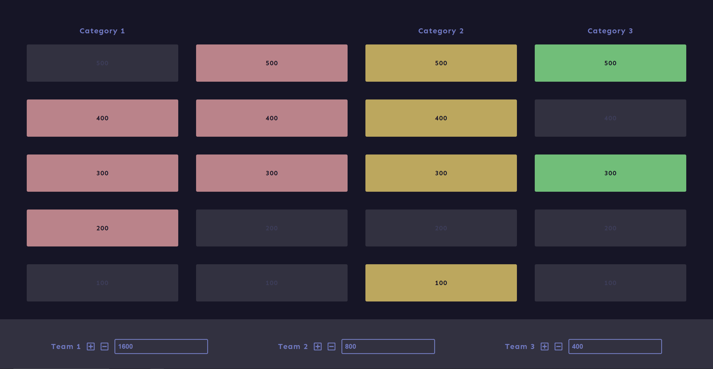

Since I'm carantined inside during COVID-19 and can't meet my friends in person, I built an quiz based on web-techologies like JavaScript, Vue.js to entertain my friends with funny questions about our friendships.
I mainly wanted to generate an framework where we could insert categories, questions and display each teams points.
You can choose between different categories and difficulties of questions based. By clicking on the desired field a pop-up displays the question and allows to visualize the solution by clicking on a button. If a field was played it gets more transparent to visualize that this field was already visited. Points can be adjusted at any time.
